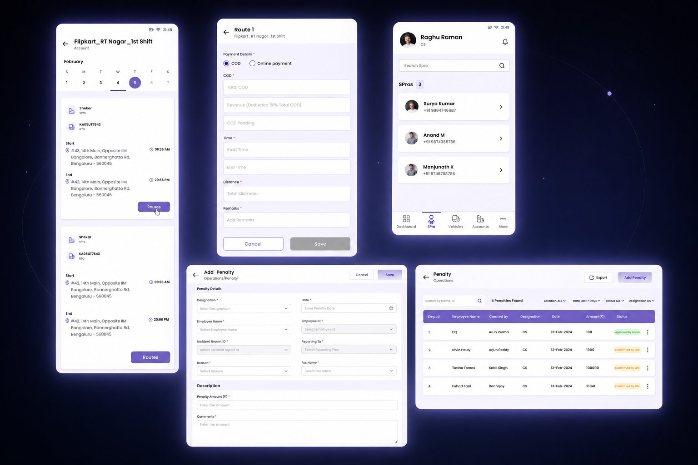
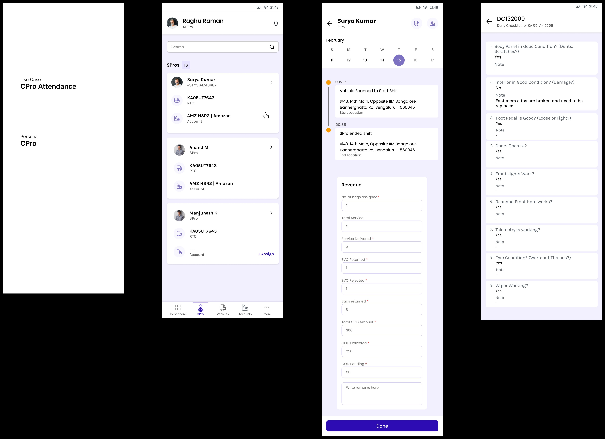
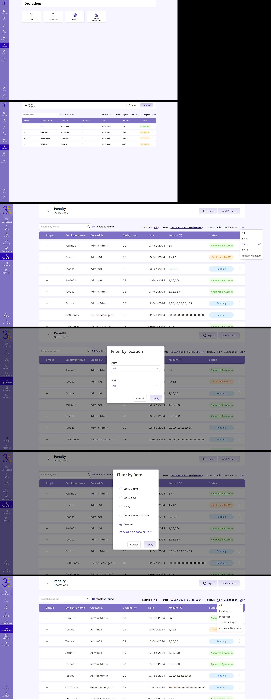
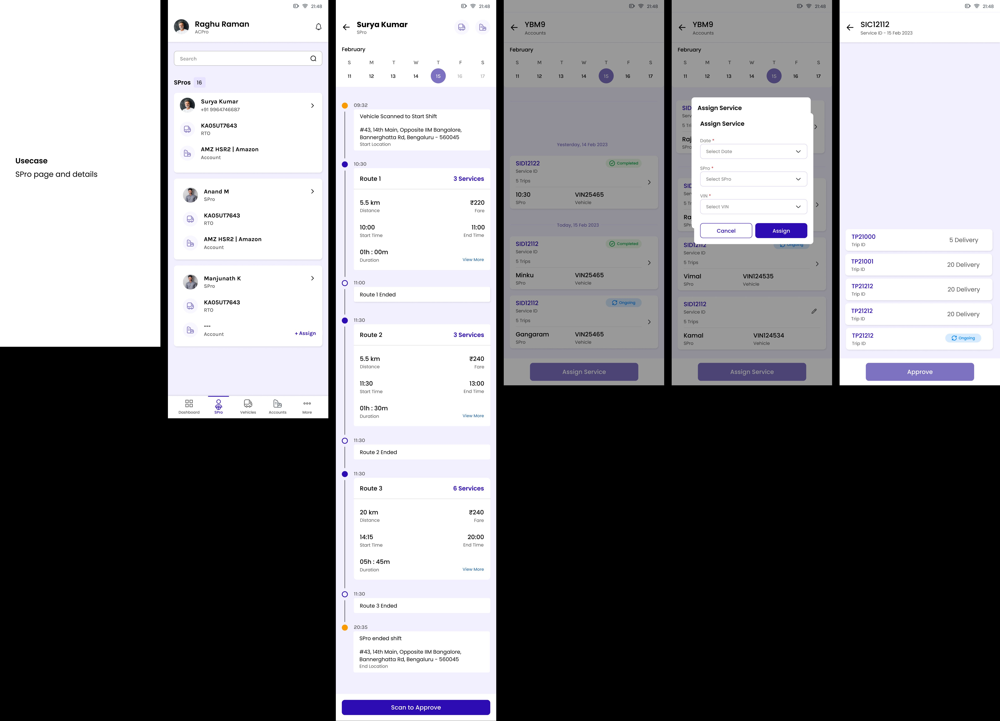
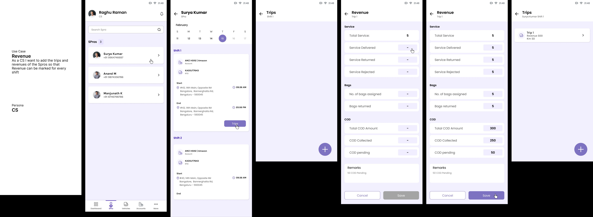
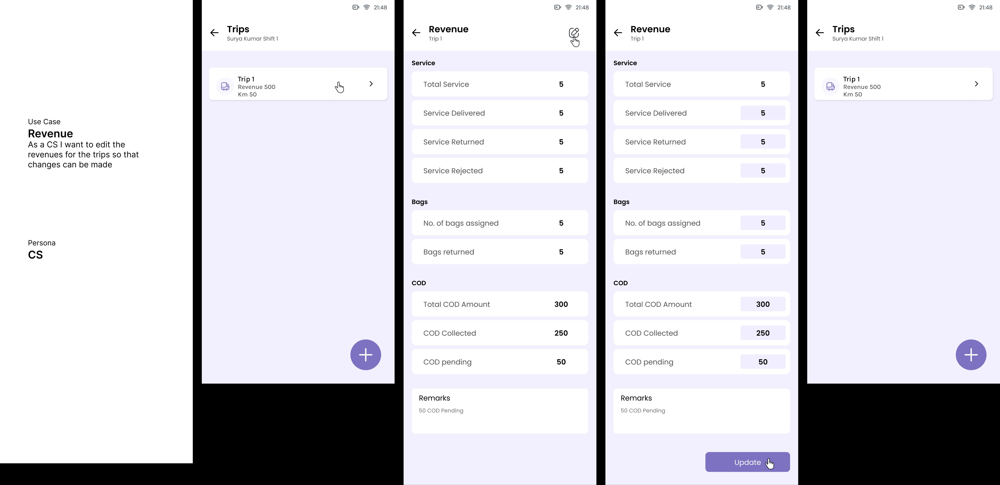

3Eco: one platform, four kinds of users.
Delivery-operations software for coordinators, drivers, compliance, and admins. The work was designing for difference instead of the average, each role gets the surface its day actually needs.

One product can't be the average of four jobs.
A coordinator scanning forty orders. A driver mid-route with one hand free. A compliance officer building an audit trail. An admin setting up the whole org. They share the same data, but not the same workflow.
Design for the average and every one of them gets a tool that's a little bit wrong. So I gave each role the right density, the right tap targets, and the right focus, all on one system.
Coordinator
Dense and fast. Assign, watch the exceptions, fix them before they blow up.
Driver
One decision at a time. Big targets, easy with gloves, readable in sun.
Compliance
Timestamped, filterable, exportable. Holds up to a regulator and a dispute.

Checklists and timestamps built to be defensible. Every action is traceable and every export is ready for someone to check.
The same data, four different surfaces.
Revenue, penalties, timelines. The records underneath are shared, but each role sees them framed for the decision it has to make. Below are the admin and operations views, built on the same foundation.


A flow that survives the edge cases.
Adding, editing, and completing revenue records, all designed as one flow with every state accounted for. In operations software the edge case is the common case.



Add, edit, complete. One flow, every state, no dead ends.